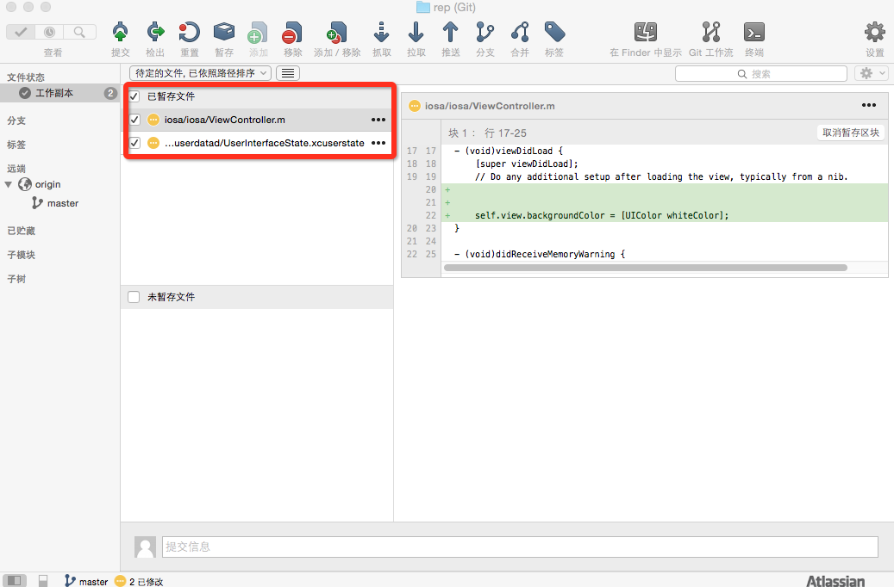
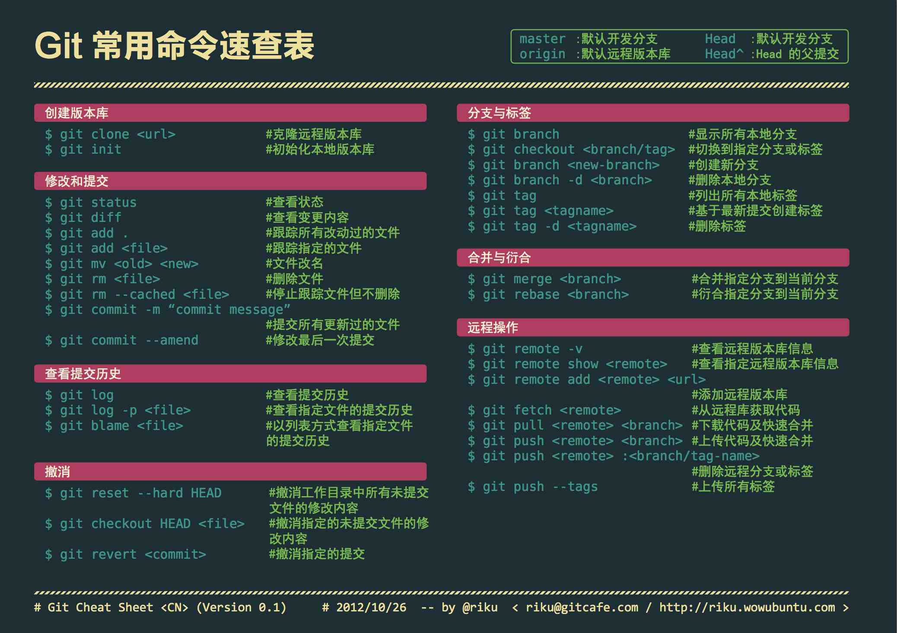

您现在的位置是：首页>Git专题
sourceTree介绍与使用/h2>
环境: Mac OS X Yosemite
软件: SourceTree

1.下载安装SourceTree
2.sourceTree设置中添加用户

3.新仓库—从Url克隆(从管理员处获取)
通过url克隆仓库到桌面

4.在克隆出的文件中添加你的代码,编译成功后,打开sourceTree
勾选

添加提交信息----提交 到本地
(也可直接提交到服务器,勾选立即推送变更到 origin/master)
提交到本地后推送会显示红点
点击
确定即推送到服务器
git分支介绍
1.介绍
Git 中的分支，其实本质上仅仅是个指向 commit 对象的可变指针。Git 会使用 master 作为分支的默认名字。在若干次提交后，你其实已经有了一个指向最后一次提交对象的 master 分支，它在每次提交的时候都会自动向前移动。
分支其实就是从某个提交对象往回看的历史
Git 又是如何创建一个新的分支的呢？就是创建一个新的分支指针
新建一个 testing 分支，可以使用 git branch 命令
git branch testing

注:git branch 紧紧是创建一个新的分支,但不会自动切换的新的分支
切换到其他分支用git checkout,如转换到新建的 testing 分支
git checkout testing
Git 是如何知道你当前在哪个分支上工作的呢？
它会在你当前工作的分支上保存着一个名为 HEAD 的特别指针:它是一个指向你正在工作中的本地分支的指针

当我们在新的分支上提交, HEAD 随着分支一起向前移动
如果我们移动回master分支
git checkout master
它把 HEAD 指针移回到 master 分支，并把工作目录中的文件换成了 master 分支所指向的快照内容。也就是说，现在开始所做的改动，将始于本项目中一个较老的版本。它的主要作用是将 testing 分支里作出的修改暂时取消，这样你就可以向另一个方向进行开发。
这是在master上做些修改在提交

我们可以 在不同分支里反复切换，并在时机成熟时把它们合并到一起
2:新建和合并
例:开发某个网站,发现一个很严重的问题需要紧急修补,git解决方案
1. 返回到原先已经发布到生产服务器上的分支。 2. 为这次紧急修补建立一个新分支，并在其中修复问题。 3. 通过测试后，回到生产服务器所在的分支，将修补分支合并进来，然后再推送到生产服务器上。 4. 切换到之前实现新需求的分支，继续工作。
1>.问题#53 创建分支iss53 切换分支
(下面的命令相当于执行$ git branch iss53 $ git checkout iss53两天命令)
git checkout -b iss53 Switched to a new branch "iss53"
2>开始尝试修复问题，在提交了若干次更新
确保修补是成功的，然后回到 master 分支并把它合并进来，然后发布到生产服务器
git merge 命令来进行合并
遇到冲突时的分支合并
会出现类似<<<<<<< HEAD:index…...提示
需要认为的解决冲突在push到服务器
可以调出可视化的合并工具查看
git mergetool
3 分支的管理
git branch 如果不加任何参数，它会给出当前所有分支的清单
git branch --merge 查看哪些分支已被并入当前分支
git branch --no-merged 查看尚未合并的工作
git branch -d 来删掉分支
4.日志
Git的传统查看日志 log
git log 会按提交时间列出所有的更新，最近的更新排在最上面
显示内容为
*提交的校验
*作者信息（作者名和email地址）
*提交日期
*提交信息
我们常用 -p 选项展开显示每次提交的内容差异，用 -2 则仅显示最近的两次更新：
还有
查找指定用户的提交日志:git log --author=Jack_Jia2015@163.com --oneline -5
指定日期:git log --oneline --before={3.weeks.ago} --after={2010-04-18} --no-merges
简洁历史版本: git log --oneline
查看历史中什么时候出现了分支、合并:git log --oneline --graph
逆向显示所有日志:git log --reverse --oneline
git log --stats 仅显示简要的增改行数统计
git log --pretty=oneline 可以指定使用完全不同于默认格式的方式展示提交历史。比如用 oneline 将每个提交放在一行显示，这在提交数很大时非常有用。另外还有 short，full 和 fuller 可以用，展示的信息或多或少有些不同
(自定义显示格式)
git config --global alias.lg "log --color --graph --pretty=format:'%Cred%h%Creset -%C(yellow)%d%Creset %s %Cgreen(%cr) %C(bold blue)<%an>%Creset' --abbrev-commit --"
然后，我们就可以使用这样的短命令了：
git lg
限制:
git 提交失败的解决办法
fatal: recursion detected in die handler
问题原因：是http.postBuffer默认上限为1M所致。在git的配置里将http.postBuffer变量改大一些即可，比如将上限设为500M：
git config --global http.postBuffer 524288000
5:实战遇到的一些问题
1.push时 error:src refspec master does not match any
原因分析
引起该错误的原因是，目录中没有文件，空目录是不能提交上去的
2. push origin master的时候出现Everything is update
这个是因为git
commit的时候是：git commit -m “xxxx”
改成：git
commit -am “xxxx”再git push origin master 就可以了
附:
git官方文档:http://git-scm.com/book/zh/v2/起步-关于版本控制
git起步:http://www.open-open.com/lib/view/open1328069609436.html
git基础:http://www.open-open.com/lib/view/open1328069733264.html
git分支:http://www.open-open.com/lib/view/open1328069889514.html
git教程:
http://www.liaoxuefeng.com/wiki/0013739516305929606dd18361248578c67b8067c8c017b000

SourceTree&Git部分名词解释
- 克隆(clone)：从远程仓库URL加载创建一个与远程仓库一样的本地仓库
- 提交(commit)：将暂存文件上传到本地仓库（我们在Finder中对本地仓库做修改后一般都得先提交一次，再推送）
- 检出(checkout)：切换不同分支
- 添加（add）：添加文件到缓存区
- 移除（remove）：移除文件至缓存区
- 暂存(git stash)：保存工作现场
- 重置(reset)：回到最近添加(add)/提交(commit)状态
- 合并(merge)：将多个同名文件合并为一个文件，该文件包含多个同名文件的所有内容，相同内容抵消
- 抓取(fetch)：从远程仓库获取信息并同步至本地仓库
- 拉取(pull)：从远程仓库获取信息并同步至本地仓库，并且自动执行合并（merge）操作，即 pull=fetch+merge
- 推送(push)：将本地仓库同步至远程仓库，一般推送（push）前先拉取（pull）一次，确保一致
- 分支(branch)：创建/修改/删除分枝
- 标签(tag):给项目增添标签
- 工作流(Git Flow):团队工作时，每个人创建属于自己的分枝（branch），确定无误后提交到master分枝
- 终端(terminal):可以输入git命令行
本文作者:Jack Jia
微博: 筑梦小丑_Dream
博客地址http://blog.csdn.net/jackjia2015